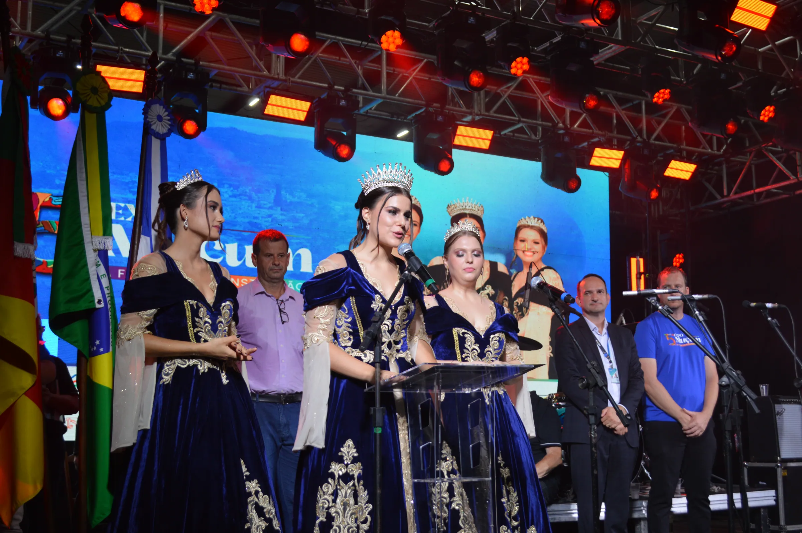
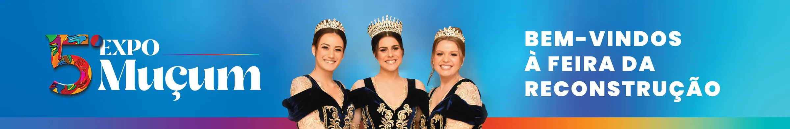
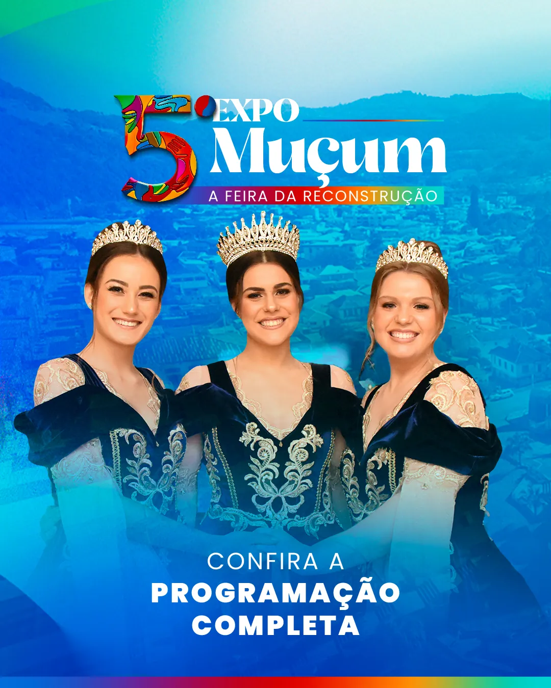
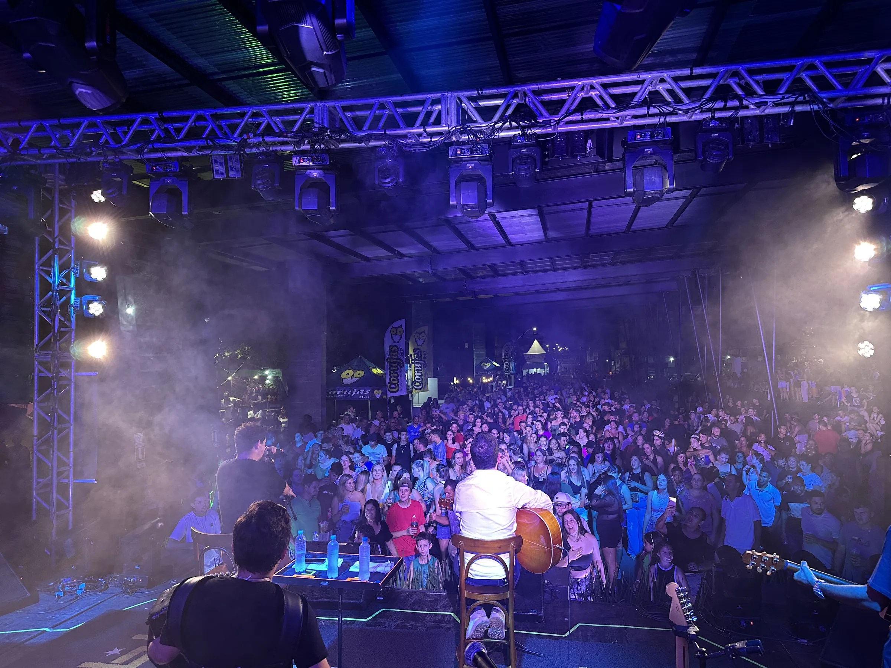
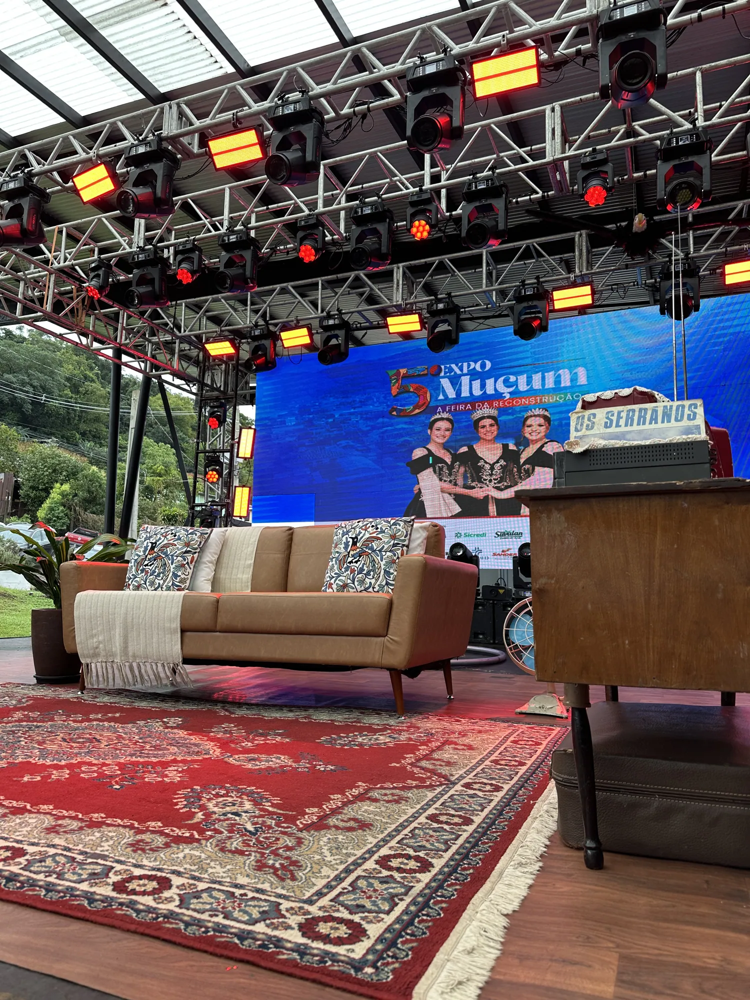
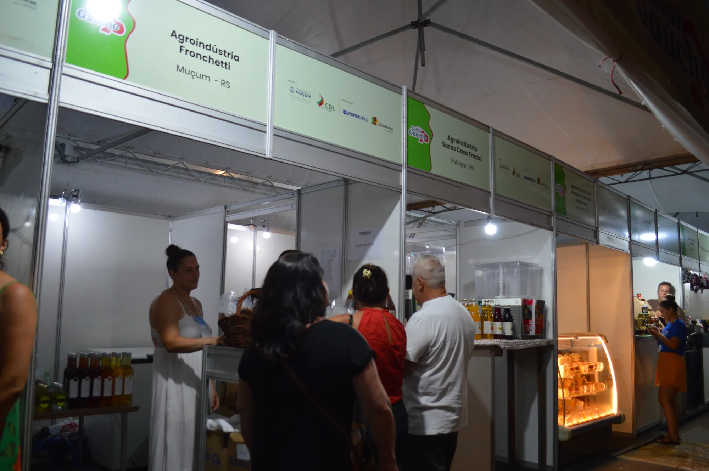
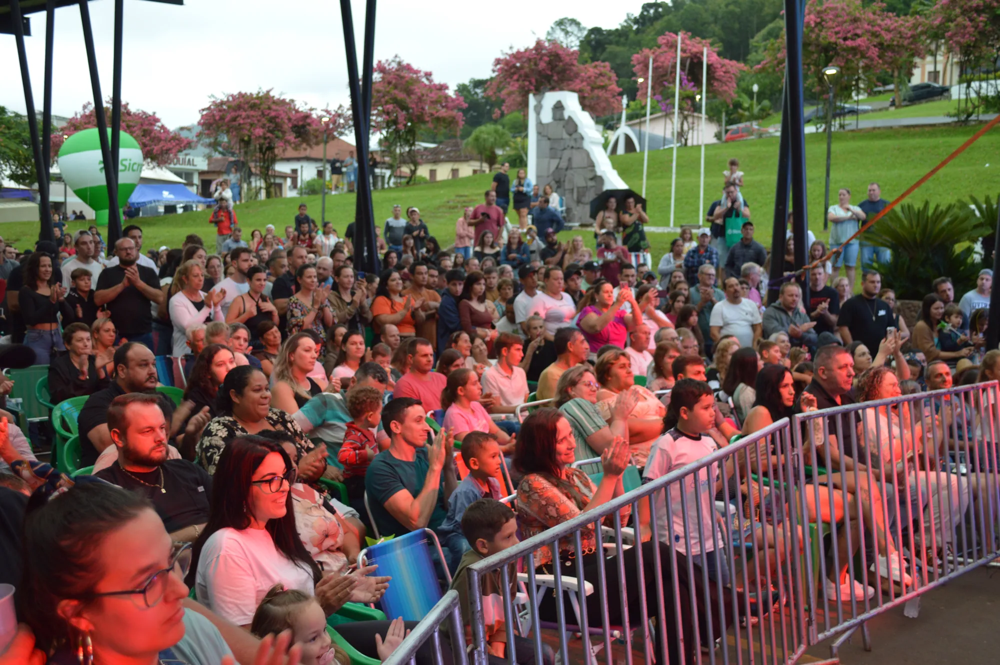

A Feira da Reconstrução.

Depois das maiores enchentes da história do Rio Grande do Sul, Muçum voltou a se encontrar na sua feira. A campanha comunicou muito mais do que um evento: força, retomada e esperança.
A ideia
Propusemos o tema A Feira da Reconstrução e redesenhamos o 5 da marca como um trabalho artesanal em madeira, lembrando as mãos solidárias que ajudaram a cidade a se reerguer.
A comunicação
O sentimento coletivo de superação virou uma experiência afetiva: o reencontro das pessoas com o riso, com a cidade e com a capacidade de seguir em frente.
O que entregamos
Tema, identidade, cards de atrações e patrocinadores, programação, stories, telão, pórtico, saia de palco, testeiras, crachás, flyer, convites, anúncios e as redes sociais com cobertura em tempo real.

Divulgação antes, cobertura durante





Uma feira para reencontrar a cidade.